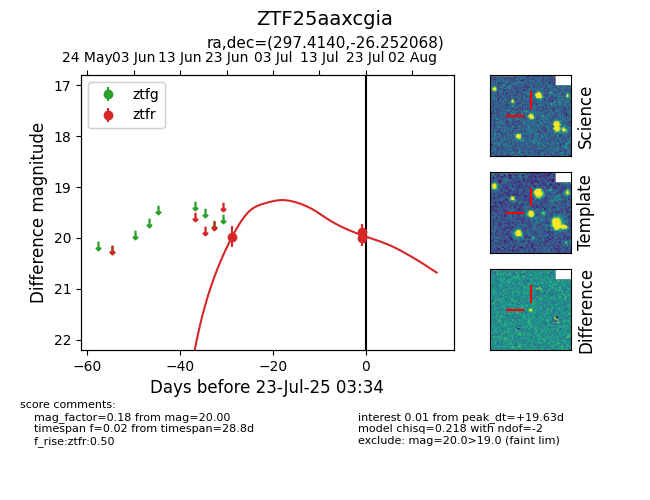

Target ZTF25aaxcgia at 2025-07-23 12:37, see:
FINK: fink-portal.org/ZTF25aaxcgia
Lasair: lasair-ztf.lsst.ac.uk/objects/ZTF25aaxcgia
ALeRCE: alerce.online/object/ZTF25aaxcgia
alt names
ZTF25aaxcgia (ztf,fink)
coordinates:
equatorial (ra, dec) = (297.4140,-26.25207)
galactic (l, b) = (14.4060,-23.72066)
photometry
last ztfr=20.00
3 ztfr detections
